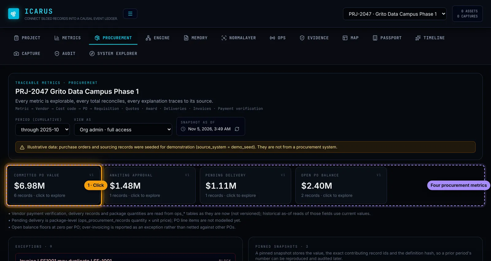
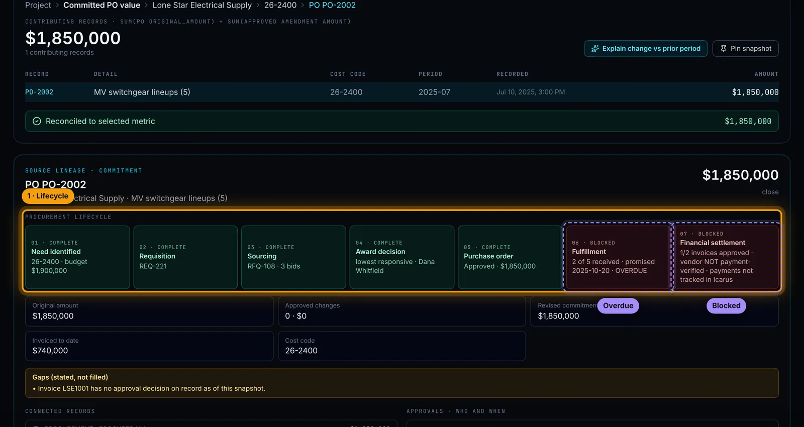
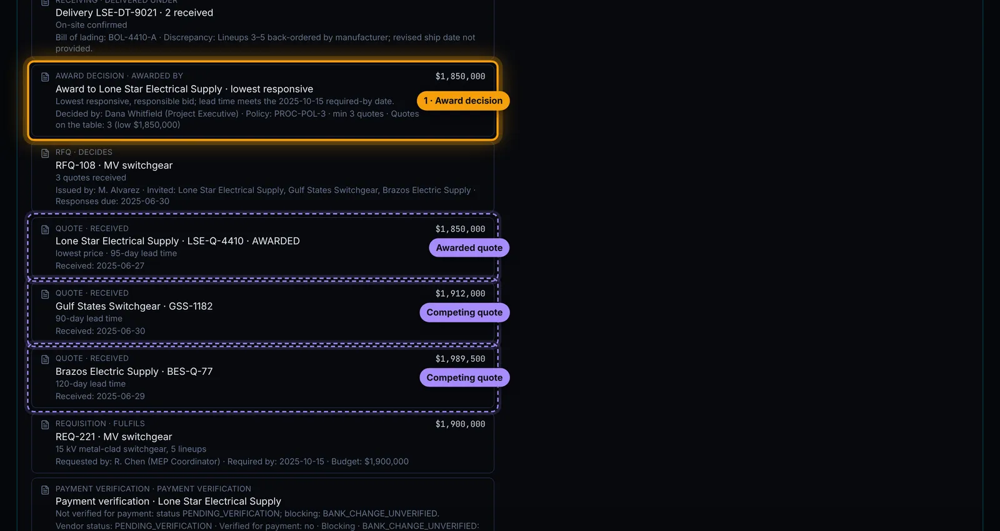
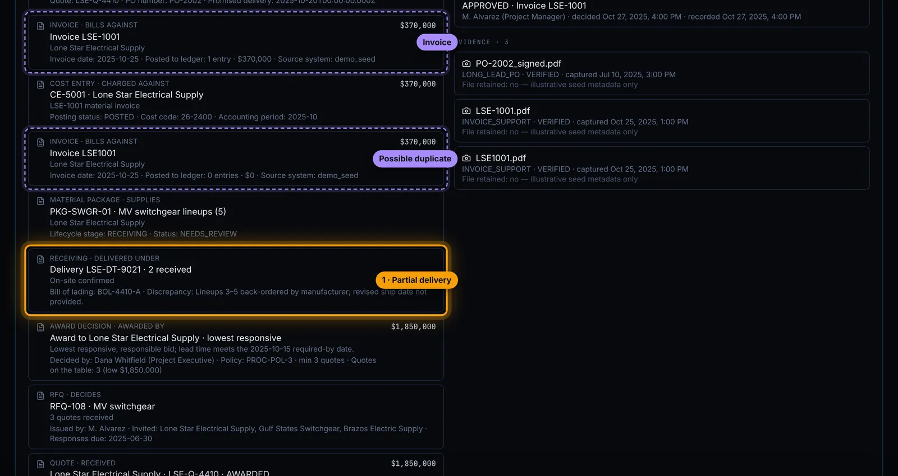
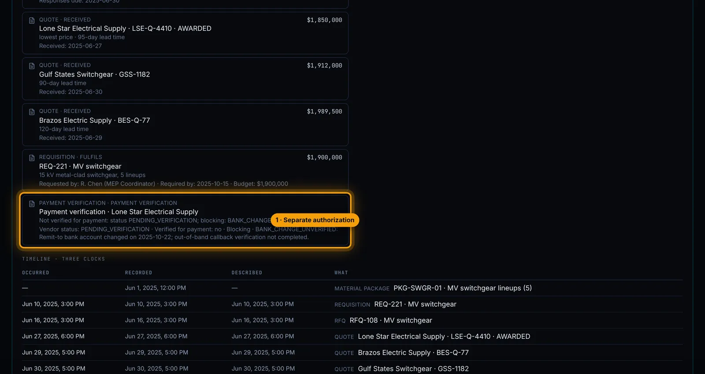
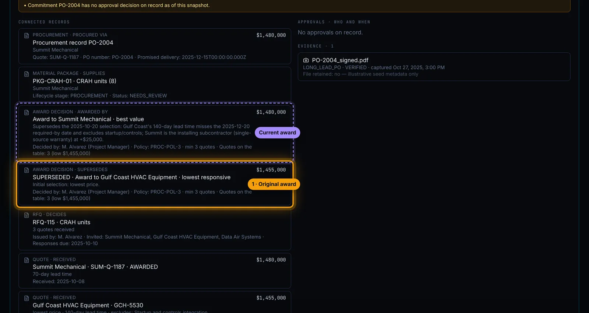
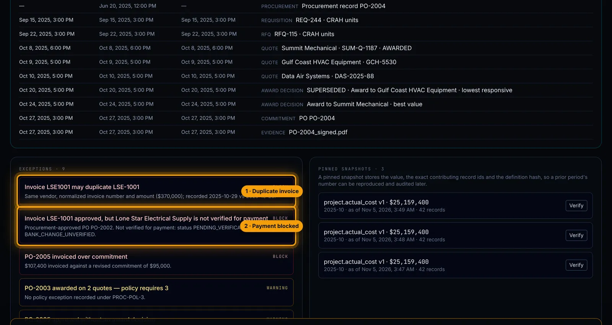
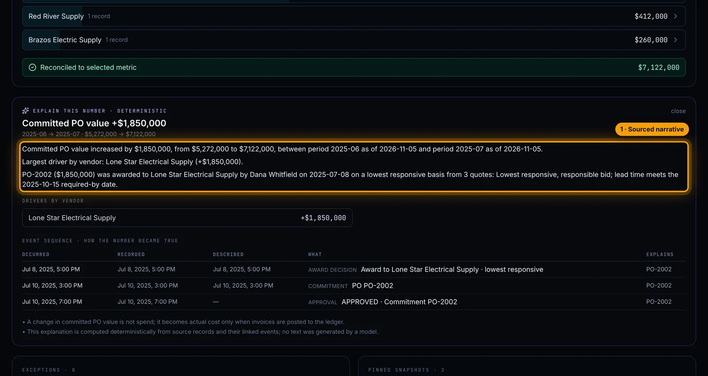

BUILT & BUILDING / 02
Traceable Procurement
Every purchase order, traced from the original need to the final payment. Who picked the vendor and why, what was quoted, what showed up, what was billed, and what's still holding up the check.
WHY IT MATTERS
- "Why did we pick them?" has an answer. The award, the quotes it beat and the policy it followed are kept together, not reconstructed from email when someone asks.
- Approval and payment are different questions. A signed PO doesn't make a vendor safe to pay. The two checks are tracked separately, so one can't stand in for the other.
- Stuck shows up before it's late. Short deliveries, duplicate invoices and thin bidding surface as exceptions from the records, not from someone noticing.
The walkthrough
ILLUSTRATIVE DEMO DATA Projects, vendors, people and amounts are invented, and every screen says so. These are captures of the working software, not mock-ups. Orange outlines mark what to look at.








WHAT THIS PROVES
Traceable records, applied to procurement: the award decision, quotes, deliveries, invoices and payment readiness behind every purchase order.
Built
- The seven-stage lifecycle, award history, separate payment verification, exceptions and explain-change run in the real software.
- Captured on an illustrative construction project, against a test data store.
Not yet
- Not yet connected to a live purchasing or accounting system.
- Runs on seeded demonstration data.
Got a PO nobody can explain? Let's trace it.
ASK FOR A WALKTHROUGHThirty minutes, on a screen share or at your office in Dallas.
Or write to bluedottechnology [at] outlook [dot] com